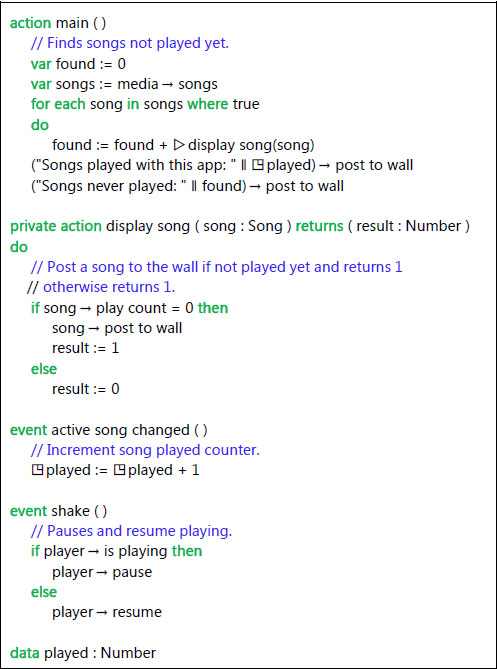

A TouchDevelop script appears to the user as statements in a language which is not unlike many other programming languages. This chapter covers the syntax and semantics of that language. The language is augmented by a powerful and rich API (Application Programming Interface), an API which significantly extends the programming capabilities of the TouchDevelop language. The API is covered in the chapters which follow this one.
Introduction – the language flavor
These introductory paragraphs are written for people who know some of the terminology used to describe programming language semantics, and will allow such readers to fast forward over large chunks of this chapter.
The scripting language is statement oriented. Statements are executed in a sequential manner. Control flow constructs include if-statements, for and while loops, and functions (which are called actions in this language).
The statements manipulate values. All intermediate values and variables are statically type checked. Only parameters of actions have explicit type declarations. The datatypes of all other values and variables are inferred through analysis of the code.
The language is strongly typed, in that (with one exception), every operation requires operands of particular datatypes and there is no automatic coercion to the type required by an operation. The datatypes belong to one of two categories: value types and reference types. Value types may have storage on the stack used for local variables, and their storage is automatically deallocated on exit from an action (i.e. from a function). Reference types have their storage allocated on the heap.
The heap is garbage collected. In addition to parameters and local variables, a script can define globally visible variables in its data section or read-only variables in its art section. Their storage is persistent across script executions.
Although the language syntax shows similarities to object-oriented languages, the language does not support the object-oriented paradigm. For example, there is no equivalent of class inheritance or method overloading.
To conserve real estate on smaller screens, several symbols are used instead of keywords. These symbols are all available as characters in the Segoe UI Symbol font (a font which is distributed with the Windows 7 and 8 operating systems). The symbols are summarized in Table 2-1.
A sample program (/okzc)
This sample program is shown in Figure 2-1. It uses several features provided by the API. They will be explained only briefly. More complete explanations are provided in later chapters. Note that this script runs only on a Windows Phone.
The script comprises two actions and two events. The action named main is the entry point for the script. The action named display song is called by main. It has one input parameter named song (with type Song) and has one result parameter named result (with type Number).
The main action defines and initializes a local variable named found. No datatype is provided in that definition; it is inferred from the value used for initialization which has type Number. The local variable named songs is, by using the API, initialized with a collection of all songs held on the phone.
Table 2-1
Special symbols used in scripts
Symbol | Unicode Value | Description |
|---|---|---|
→ | U+2192 | Select a method or field belonging to the value provided on the left |
▷ | U+25B7 | Call the action named on the right and defined in the current script |
◳ | U+25F3 | Access a global persistent variable defined in the data section of the script |
♻ | U+267B | Call a function defined in another script, which has been published as a library |
⌹ | U+2339 | Access a datatype or item declared in the record section of the script |
✿ | U+273F | Access a value in the art section of the script |
A for-each loop steps through every value in the collection, assigning the next variable to a new local variable named song. The first statement inside the loop calls an action using the notation ▷display song(song). It passes a reference to the local variable song and receives a number back as the result, adding that to the found variable.
The second statement inside the loop takes a string constant and concatenates the value of the global data item named played. The preceding symbol ◳ indicates that the variable has global scope and is persistent. The string concatenation operator is || and is the only operator in TouchDevelop which is overloaded – meaning that it accepts operands with any datatypes and those operand values are converted to strings.
The resulting string value constructed by the concatenation appears to the left of the arrow operator →. It indicates that the value is to be transmitted to the method shown on the right, whose name is post to wall. Almost every datatype has a post to wall method; it causes a representation of the value to be displayed on the screen.
The sample script contains two events. An event is an action which is executed whenever the specified event occurs. The shake event is caused by physically shaking the phone. When shaking is detected by the phone’s sensors, the code provided for the shake event is executed. Events do not interrupt each other; they are executed in first-come first-served order.

Figure 2-1
The ‘new songs’ script (/okzc)
If a script contains one or more events, the main program does not terminate. It waits for events to occur. In this case, the script terminates only if halted by the user (e.g. tapping the phone’s back button) or if it executes a call to a method in the API for that purpose (time→stop).
Datatypes and variables
Each type (except the special type Nothing) belongs to one of two categories: Value Types or Reference Types. If a variable has a value type, then storage for an instance of that type is held inside the variable itself. For example, a variable with type Number is allocated storage which is used to hold number values. However, if a variable has a reference type, then storage for its value is allocated on the heap and the variable holds a reference to that heap storage.
2.2.1 The Invalid value
Every datatype (except the special type Nothing) has a special value Invalid in addition to all its normal values. This special value is normally used to indicate that a global data variable has not been initialized or that a method in the API was unable to return a value. TouchDevelop provides a method for testing a value of any datatype (except Nothing) to test whether it is the Invalid value. There are also API methods for obtaining the Invalid value for any desired type.
If a data structure (such as a tree or linked list) is constructed using Object types declared in the Records section of a script, the Invalid value would usually be used to play the role of a null reference value.
Some code to demonstrate the use of Invalid values appears below.
var
numUsers := 0
…
if
connection failure detected
then
numUsers := invalid → number
else
…
if
numUsers → is invalid
then
“Script is terminating” → post to wall
Else
The Nothing type
A method or an operation which does not return a usable result, but which otherwise succeeded, actually returns a value of type Nothing. For example, the post to wall method which is provided for every datatype returns a result of type Nothing. In some languages, such as F#, the Unit type is the equivalent of the Nothing type in TouchDevelop. There is a single value with type Nothing. No operations at all are provided for this type; it is similar to the void type in languages like C/C++ and Java.
Value types
The basic types or elementary types provided in the TouchDevelop scripting language are Number, Boolean, and String. These are all Value Types. There are also several composite types which are value types. All the value types are listed in Table 2-2. Here are some further details about the Number and String types.
Number
The Number type combines the integer and floating-point types found in other languages. Values are held in double-precision floating point format, consistent with the IEEE 754 standard. This implies that the special values plus infinity, minus infinity and NaN (not-a-number) can be computed as the result of a calculation.
When a Number value is used in a context where an integer is needed, such as when selecting the k-th value in a collection, the value is rounded to the closest integer. A value exactly half-way between is rounded up; for example, 1.5 is rounded up to 2 while 1.49 is rounded down to 1.
Table 2-2
The Value types
Value Type | Description | Covered in Chapter |
|---|---|---|
Number
| An integer or floating-point number | 2 |
Boolean
| The type whose constants are true and false | 2 |
String
| A sequence of zero or more Unicode characters | 2 |
Color
| Used for colors displayed on the screen. Values are compatible with 4 byte ARGB (alpha, red, green, blue) color representations. Many standard colors are provided as constants of the Color datatype. | 6 |
DateTime
| Holds any date from 0001 CE (Common Era) to 9999 CE, combined with a time of day. The time of day is recorded with 100 nanosecond accuracy. | 8 |
Location
| Holds a combination of latitude, longitude and altitude values plus a course direction and a speed in two-dimensional space. | 8 |
Motion
| A combination of sensor readings which describe motion of the phone in 3D space plus a time-stamp which specifies when the readings were taken. The motion information includes speed, acceleration and angular velocity. | 7 |
Vector3
| A triple of three numbers used to hold a velocity or acceleration in the three spatial dimensions or an angular velocity about the three axes in 3D space. | 7 |
String
A string may contain zero or more Unicode characters. When a string constant is shown as part of a TouchDevelop script, double-quote characters are used to enclose the string and a backslash character is used to escape a double-quote character or a special character which appears inside the string. However, when using the editor to enter a string constant, no backslash characters should be entered (unless a backslash character itself is wanted inside the string constant).
It should be noted that TouchDevelop does not provide the char type for working with single characters. Instead a string of length one should be used.
Reference types
Storage for an instance of a reference type is allocated in a different place from a variable declared with that type. A local variable with a reference type is implemented as a pointer (a reference) to the actual value which is stored elsewhere.
In TouchDevelop, two kinds of reference types are provided. If the value represents an entity which exists outside TouchDevelop, such as a song on a Windows phone, then storage is allocated outside the TouchDevelop application. Otherwise the storage is allocated within an area of memory controlled by TouchDevelop which is called the heap. When there are no more references to a value on the heap, the storage used by that value is automatically reclaimed. It is garbage collected. The language facilities and the operations which can be performed on reference types in a TouchDevelop script depend on whether the values are external to the script or are internal.
When one variable with a reference type is assigned to another variable, both variables will become references to the same instance. A simple example to illustrate this sharing of one instance between two variables is provided by the following code.
// Set x to refer to a value of type Contact
var
x := social → choose contacts
var
y := x
x → set title(“His Excellency”)
y → title → post to wall
In this example, the title displayed on the screen by the last statement will always be ‘His Excellency’ because x and y are both references to the same instance on the heap, in which the title field of an instance of the Contact type has been set to that string.
Reference types provided by the API
Excluding the collection types (which are covered in the next subsection of this chapter below), Table 2-3 lists the reference types implemented by the API and available to TouchDevelop scripts. The table explicitly indicates whether storage for an instance of each type is allocated on the heap or is external to the TouchDevelop script.
Table 2-3
Reference types provided by the API
Reference Type | Description | Storage | Covered in Chapter |
|---|---|---|---|
Appointment
| A calendar appointment | Heap | 8 |
Board
| A 2D canvas on which sprites can be drawn and moved | Heap | 9 |
Camera
| The front or back camera | External | 6 |
Contact
| Contact information and details about a person or company | External | 8 |
Form Builder
| Used to create HTML form data | Heap | -- |
Json Builder
| A JSON data structure builder | Heap | -- |
Json Object
| A JSON data structure (obtained from a website) | Heap | 4 |
Link
| A link to a video, image, e-mail or phone number | Heap | 5,6,8 |
Location
| A geographic location | Heap | 7,8 |
Map
| A BING map | Heap | 8 |
Matrix
| a 2-D matrix of numbers | Heap | -- |
Media Link
| A media file on the home network | External | 5,6 |
Message
| A posting on a message board | Heap | 8 |
OAuth Response
| OAuth 2.0 access token or error | Heap | 11 |
Page
| A page on the wall | Heap | 3 |
Page Button
| A button on the wall which can be tapped | Heap | 3 |
Picture
| A rectangular picture containing graphics or a photograph | External | 6 |
Picture Album
| A named album of pictures | External | 6 |
Place
| A named location | Heap | 8 |
Playlist
| A song playlist | Heap | 5 |
Song
| A song | External | 5 |
Song Album
| A song album | External | 5 |
Sound
| A sound clip | Heap | 5 |
Sprite
| A graphical object which can be displayed on a Board instance | Heap | 9 |
TextBox
| A box used to display text on the screen | Heap | 6 |
Web Request
| A HTTP web request | Heap | 4 |
Web Response
| A HTTP web response | Heap | 4 |
Xml Object
| A XML element or collection of elements | Heap | 4 |
Collection types
The API also provides homogeneous collections. A collection contains zero or more elements whose type is one of the value types or one of the reference types listed in Table 2-2. Collections are provided for many of the possible element types. When a collection type has not been provided, an equivalent list type can be defined instead using an Object declaration (see Objects and Decorators, below).
Some collections correspond to resources provided on a Windows Phone (and therefore may not be supported on other platforms), such as a collection of stored songs, and such collections are immutable. Other collections are mutable, meaning that new elements can be inserted into the collection and/or elements may be deleted.
The collection types provided by the API are listed in Table 2-4 and Table 2-5. Three of the collection types have been tagged as special and are listed separately in Table 2-5. These three collection types have some special properties not possessed by the other collection types and need some additional explanation.
Tables and indexes
The Records section of a TouchDevelop script can contain definitions of Tables. Each Table type is a datatype with a single instance and is globally visible. It corresponds to a database table which consists of rows and whose fields are organized into columns. The Records section can also contain definitions for Index types.
Objects
The Records section of a script can include declarations for Object types. Each Object type is a new datatype which is composed from named fields, similar to a struct or class type in other languages. Storage for instances of Object types is allocated on the heap and is garbage collected. Since it is heap allocated, every Object type is a Reference type.
Table 2-4
Regular collection types
Collection Type | Element Type | Mutable? | Covered in Chapter |
|---|---|---|---|
Appointment Collection
| Appointment | No | 8 |
Contact Collection
| Contact | No | 8 |
Link Collection
| Link | Yes | 8 |
Location Collection
| Location | Yes | 7,8 |
Media Link Collection
| Media Link | No | 5,6 |
Message Collection
| Message | Yes | 8 |
Number Collection
| Number | Yes | 2 |
Page Collection
| Page | No | 3 |
Picture Albums
| Picture Album | No | 6 |
Pictures
| Picture | No | 6 |
Place Collection
| Place | Yes | 8 |
Playlists
| Playlist | No | 5 |
Song Albums
| Song Album | No | 5 |
Songs
| Song | No | 5 |
String Collection
| String | Yes | 2 |
Table 2-5
Special collection types
Collection Type | Element Type | Mutable? | Covered in Chapter |
|---|---|---|---|
Number Map | Number | Yes | 2 |
String Map | String | Yes | 2 |
Sprite Set | Sprite | Yes | 9 |
Decorators
Decorators may be declared in the Records section of a script. A decorator is used to associate extra information with instances of some reference types. The types which can be decorated are Appointment, Board, Json Object, Link, Map, Message, Page, Page Button, Place, Sound, Sprite, TextBox, Tile, Web Request, Web Response, Xml Object and Sprite Set. User-defined objects can be decorated as well.
Global persistent data
The Data section of a TouchDevelop script may contain declarations for global variables. Each of these variables has a datatype which must be one of the types provided in the language or API or one of the Object types declared in the Records section of the script.
Any global variable declared to have a simple type or the DateTime type is initialized to a neutral value. The neutral values are 0 for a Number, false for a Boolean, “” for a String, and 1/1/0001 12:00:00 AM for a DateTime variable. A variable with any other type is initialized to a special invalid value.
The is invalid method is provided for every datatype and may be used to test whether a global variable has not yet been initialized or a value was unobtainable. For example, if the Data section of the script contains a declaration for the global variable MyFriends with the type String Collection, then this script might contain statements like the following to check whether the variable needs to be initialized.
if
◳MyFriends → is invalid
then
// it’s the first use of this script, initialize the global variable
◳MyFriends := collections → create string collection
else
// do nothing
The values held by many of the global variables persist from one execution of the script to the next because they are held in the phone’s memory. The only ways to ‘forget’ these values are to uninstall the script or edit the script and delete the global variables.
Art items
Some scripts need to display pictures or to produce sounds. These pictures or sounds can be added to the script as global constants and become part of the script. Such items are held in the Art section of the script. In addition, the Art section can contain definitions for particular colors which will be needed by the script.
The Art section of the script is similar to the Data section except that the items are restricted to having one of the datatypes Color, Picture or Sound, and these items are initialized. Initialization for a Color value is provided via an ARGB (alpha, red, green, blue) value; initialization for Picture or Sound values is obtained by downloading the desired value from a web site.
Expressions
Constants
Explicit constants of type Number, String and Boolean can be directly entered into scripts using the editor. Named constants with the types Color, Picture and Sound can also be incorporated into a script, but their values have to be specified through special mechanisms and these values are accessed through the use of entries in the Art section of a script. Finally, there is a special kind of constant, invalid, which is provided for every datatype.
Explicit Constants
Number constants are written in the usual formats for non-negative decimal integers and non-negative decimal fixed-point constants. The maximum value, minimum value and precision correspond to the IEEE 754 standard for 64 bit floating point numbers. Integers with magnitudes up to approximately 1014 are represented exactly. Larger values are subject to round-off error. These are some examples of valid Number constants.
0 23 001 3.14159 100000.99
Note that it is not possible to write a negative numeric constant. Thus, the parentheses are necessary in the following statement.
(- 3) → post to wall
The value being printed is an expression composed of the unary negation operator applied to the positive constant 3. If the parentheses are omitted, a semantic error is reported.
String constants can be entered with the TouchDevelop editor and can directly contain any characters provided on the keyboard. Although strings are implemented as sequences of Unicode characters, no mechanism is provided for including an arbitrary Unicode character in a string constant. (The full complement of Unicode characters is available only through the to character method of the Number type.) Some examples of String constants are as follows.
“” “abc” “hello there”
The two Boolean constants can be entered directly using the editor. They appear in scripts as follows.
true false
Named constants
The TouchDevelop WebApp editor provides a mechanism to add named constants of type Color Sound Picture String and Number to the art section of a script. Tapping the plus symbol below the art heading in the editor window and choosing Color as the type of the new resource brings up a window to select a new color. Four sliders allow the alpha, red, green and blue components of the color to be independently varied, with the effect shown on the screen.
Several predefined color constants can also be accessed via the colors resource in the API. For example, the name colors → blue refers to the color blue which has the ARGB encoding #FF0000FF. A complete list of the predefined colors which can be accessed via the colors resource is given in Appendix B.
Selecting Picture as the type for the art resource causes a menu of choices to be displayed. One choice, labeled upload, allows you to select an image on your device and upload it to a Microsoft website where it is accessible via its URL. Other choices allow images already available on the web to be selected. The image is then added to the Art section of the current script.
Selecting Sound as the type leads to similar choices as for an image.
Named constants of type Number and String are equally as accessible in a script as global data variables with these types. However data variables require initialization when the script is run, and they are not protected against being modified. A named constant, on the other hand, is initialized when the script is created and cannot be modified by assignments performed in the script.
The invalid value
The resource named invalid provides an invalid value specific to each datatype. For example, the following statement assigns the invalid value of type DateTime to variable x.
x := invalid → datetime
A complete list of the possible invalid values provided by the invalid resource appears in Appendix B.
Variables
A script can access and assign to local variables, global data variables and parameters of the current action.
Local variables
Local variables follow the usual visibility rules and lifetime rules for block structured languages. The name of the variable is visible from the point of declaration down to the end of the block in which the declaration appears. Storage for the variable’s value, if the type is a value type, is provided only while the block is active. If the type is a reference type, then storage for the reference is only provided while the block is active.
A local variable must be declared and initialized before it can be used. A declaration statement serves both purposes. For example, the following statement declares and initializes a String variable.
var
s1 := “Hello!”
Following that declaration and down to the end of the enclosing block, the name s1 can be used to reference the local variable’s current value.
Unlike most programming languages, the name s1
cannot be hidden by a declaration for another variable named s1 inside a nested block. The TouchDevelop editor simply does not permit two variables with the same name to be declared inside an action; it forces all the parameters and local variables in an action to have distinct names.
Global data variables
The data section of a script contains declarations for variables which are accessible by all actions within the script. Storage for these variables is permanently allocated in most cases, and would therefore persist between invocations of the script. However, variables which require significant storage and which are normally recomputed whenever the script is executed, such as an instance of the Board type, do not persist between uses of the script.
A global data variable is created either by tapping the plus button underneath the heading for the data section of the script or by declaring a local variable in an action or event and then using the ‘promote to global’ feature of the TouchDevelop editor.
A global data variable may be created with any datatype. If the type is Number, Boolean, String or DateTime, the variable has a neutral initial value. The value is 0, false, “” or 1 January 0001 12:00 am respectively. For any other datatype, the initial value is invalid.
An access to a global data variable inside a script is indicated by the special symbol ◳. For example, the following statement assigns a value to a global variable of type Board.
◳game := media → create board(480)
A reference to a global data variable is inserted into the script by tapping the keypad tile labeled ◳data and then a tile labeled with the variable’s name.
Action parameters
Parameters of an action are variables but with special properties. Zero or more input parameters and zero or more result parameters can be associated with the action by editing its properties. An input parameter can be added to an action by first displaying the code for the action, then tapping the first line of the action (where its name appears) to display information about the action. A plus button labeled “add input parameter” is displayed beneath that information. An input parameter can have any datatype except the Nothing type. A result parameter is similarly created by tapping the plus button labeled “add output parameter”. It too can have any type other than Nothing.
A result parameter is special in that it has an initial value of invalid and that every execution path through the action must assign a value to it.
Other than that special requirement, the input parameters and the output parameters can be used within the action as though they were local variables.
Operators
With the exception of string concatenation, there are no implicit conversions; and none of the operators is overloaded. Therefore, except for string concatenation, each operator can be applied only to particular datatypes. The operators and the associated datatypes for the operands and result are summarized in Table 2-6.
Table 2-6
Operators
Operator | Operand Types | Result Type | Description |
|---|---|---|---|
+ | Number | Number | prefix unary plus |
- | Number | Number | prefix unary minus |
+ | Number Number | Number | addition |
- | Number Number | Number | subtraction |
* | Number Number | Number | multiplication |
/ | Number Number | Number | division |
< | Number Number | Boolean | less-than comparison |
≤ | Number Number | Boolean | less-than-or-equal comparison |
> | Number Number | Boolean | greater-than comparison |
≥ | Number Number | Boolean | greater-than-or-equal comparison |
= | Number Number | Boolean | equals comparison |
≠ | Number Number | Boolean | not equals comparison |
not | Boolean | Boolean | logical negation |
and | Boolean Boolean | Boolean | logical and |
or | Boolean Boolean | Boolean | logical or |
|| | any any | String | string concatenation |
The operands of the string concatenation operand may have almost any datatype. The values of the two operands are converted to type String before concatenation proceeds.
Calling an action
An action which has a single result parameter can be used in any context where an expression is permitted. Actions are covered in detail in section 2.5, below.
Calling an API method
The API provides many methods which return single results. An invocation of any of these methods can be used in a context where an expression is permitted. The methods may be associated with resources, such as media or languages, or they may be methods of datatypes defined in the API such as Contact or Link Collection.
Statements
Expression
Any expression may be used as a statement. For example, this is a valid statement:
“Hello “ || “ there!”
However, this particular statement is useless. The value of the expression is simply discarded. The use of an expression as a statement is only useful if evaluation of the statement has a side-effect. For example,
(“Hello “ || “ there!”) → post to wall
This expression evaluates to the special value nothing. However evaluation also has the side-effect of displaying a string on the screen.
An invocation of any action or API method which returns results can be used as a statement; the results are simply discarded.
Declaration and assignment
A declaration of a local variable is combined with an assignment to initialize the variable. The datatype of the initialization expression determines the datatype of the variable. For example, the following statement creates a local variable whose type is Location Collection.
var
places := collections → create location collection
Assignments may also assign values to existing variables. For example, the script can replace the value of the places variable declared above. A possible statement which does that is the following.
places := invalid → location collection
If an action has more than one return parameter, an assignment statement can be used to assign all the results simultaneously. For example, if the script contains an action named Get Address Info which returns a String and a Number as its two results, the action can be invoked with code like the following.
var
street name := “”
var
street number := 0
street name, street number := ▷Get Address Info(“Joanie”)
Either all the results or none of the results must be assigned. It is not possible to assign some results and discard the other results.
If statement
The TouchDevelop editor always generates the if-then-else form for an if statement, supplying empty bodies for the then clause and the else clause. Either or both of these clauses may subsequently be replaced with statement lists. The expression following the keyword if is an expression which must evaluate to a Boolean value. As usual, if the expression evaluates to true, the then clause is executed next and the else clause is skipped. Otherwise the reverse happens, the then clause is skipped and the else clause is executed.
For example, the following code determines the minimum of three values a, b and c.
if
a < b
then
if
a < c
then
min := a
else
min := c
else
if
b < c
then
min := b
else
min := c
While loop
A while loop has a controlling expression which must evaluate to a Boolean value. The loop body is repeatedly executed as long as the controlling expression evaluates to true.
For example, the following code searches for any song stored on a Windows phone whose duration exceeds 10 minutes.
var
long song := invalid → song
var
my music := media → songs
var
num songs := my music → count
var
i := 0
while
i < num songs
and
long song → is invalid
do
var
sng := my music → at(i)
if
sng→ duration > 10*60
then
long song := sng
else
// do nothing
i := i + 1
For loop
The for loop in TouchDevelop is similar to for loops in other programming languages, but with some added constraints. The index variable must be a Number; it must be initialized to zero for the first iteration and it must be incremented in steps of one.
An example for loop which sums the integers from 0 to 99 would be as follows.
var
sum := 0
for
0 ≤ i < 100
do
sum := sum + i
The index variable, i, in the example is a new local variable whose visibility is restricted to the for loop. It must be a uniquely named variable in the enclosing action. No assignments to the index variable are permitted within the loop body; this variable is restricted to being read-only.
For each loop
A for each loop is used for iterating through all the elements of a collection. For example, this loop adds up the playing times of all songs stored on a Windows phone.
var
total := 0
for each
sng
in
media→songs
where
true
do
total := total + sng → duration
(“Total playing time = “ || total/60 || “ minutes”) → post to wall
Note that there is a where clause which may be used to select only some of the values in the collection. The TouchDevelop editor supplies a default value of true for the where clause, but it can be replaced by any expression which evaluates to a Boolean value.
As with a for loop, the index variable is a read-only variable and it is a new local variable whose visibility is restricted to the for each loop.
Actions
Defining an action
An action can have zero or more input parameters and zero or more result parameters. When there are zero result parameters, the action can be called only for its side effects. There is no value returned by the call in this case. When the action has two or more result parameters, the invocation can be used on the right-hand side of a multiple assignment statement or the invocation can be made for its side effects only (and any returned results are ignored). When the action has exactly one result parameter, an invocation returns a single value as the result and that value may be used in any context where an expression can occur.
For example, consider the action Replicate defined as follows.
action
Replicate( s: String, n: Number )
returns
r: String
r := “”
while
n > 0
do
r := r || s
n := n – 1
The action can be invoked and its resulting value used in a statement like the following.
(“The answer is “ || ▷Replicate(“NO! “, 10) || “forever!”) → post to wall
Immediately before the statements of the Replicate action are executed, the string “NO!” is copied into parameter s, 10 is copied into parameter n and the result parameter r is initialized to invalid. When the action has finished its execution, the final value of r is returned as the result.
Public versus private
When the properties of an action are accessed with the editor, the editor provides the ability to specify the input parameters, the result parameters, and to change the name of the action. There is also a checkbox which is labeled “private action”. Leaving that box unchecked allows the action to be invoked directly. If a script has two or more actions (or pages, as discussed in Chapter 10) not tagged as private, the script has multiple entry points.
Another consequence of leaving the checkbox unticked is that the action can be invoked from another script when the script is published as a library. (See the subsection below on Library Scripts.)
Ticking the ‘private action’ checkbox restricts the action to being accessible only from other actions within the same script.
Call and return
An invocation of an action causes any arguments to be evaluated and copied to corresponding input parameters of the action, then the statements of the action are executed, and finally the values of any result parameters are copied back to the caller and made available as the value of the action.
A call to an action located in the same script is indicated by the code symbol, ▷.
Input parameters
The call by value parameter passing mechanism is used for input parameters. Each argument expression supplied by the caller is evaluated and assigned as an initial value to the corresponding parameter. In the case where the argument and parameter have a value type, a duplicate of the value is assigned to the parameter. When the argument and parameter have a reference type, it is the reference which is duplicated, so that the parameter references the same instance on the heap as supplied by the caller.
Result parameters
When an action is invoked, each result parameter is initialized to an invalid value of the correct type. There must be at least one assignment to each result parameter on every execution path which can be taken through the action. When control reaches the end of the action, the final values of the result parameters are returned as the results of the call.
Calling a library action
It is possible to invoke actions in a script which has been declared as a library. Each such library script must be added to the library section of the script. An imported script is given a name by the TouchDevelop editor (a name which is copied from the original script but can be changed later).
When editing code in the script, the editor provides a button labeled ♻libs. Tapping this key inserts the symbol ♻ into the code and the editor then provides a choice between the various names used for the imported library scripts. Once a name has been selected, the editor allows any action in that library script, other than those marked as private, to be called.
For example, the library script turtle, published as /sicm on the TouchDevelop website, provides actions for drawing colored lines using a virtual pen (a scheme known as ‘turtle graphics’). To use this library in our own script S, one first adds the turtle script to the library section of S. The editor will use the name turtle for that library. Subsequently, actions and events defined in S can contain code like the following.
♻turtle→initialize
♻turtle→pen down
♻turtle→pen color(colors→red)
♻turtle→forward(100)
Rebinding libraries
If script S uses some actions in library L1 but another library L2 which implements the same actions becomes available, the editor provides the possibility to rebind S to use L2 instead of L1. A more complicated example of rebinding is possible if our script S uses library L1 and L1 in turns uses library L2. The libraries section of S can be edited so that references from L1 to actions in L2 can be bound instead to actions in another library L3 or to actions (with the correct signature) in S itself.
Visibility
Although the non-private actions of a library script are all visible, nothing else is visible. There is no direct access to any global data items or art items declared in the script. If the developer of the library wishes to permit such access, get and set actions must be provided in the library for returning or replacing the values of these items.
Events
In some respects, events are like actions. They contain code and some kinds of events take input parameters. However events cannot be called. They can only be invoked when something external to the script occurs. For example, shaking the phone is detected by the phone’s sensors and can cause the code for the shake event in the TouchDevelop script to be executed.
An event interrupts the normal execution of a script. However an event will never interrupt the code for another event. Instead, execution of the second event will wait until the executing event has finished.
If a script contains code for one or more events, the script will not terminate execution when it reaches the end of the action which was initially invoked. The script enters an internal wait loop where it waits for events to occur and to be executed. To force a script to stop execution, it is necessary to use one of the API methods time→stop, time→stop and close or time→fail if not.
The kinds of events and brief descriptions are listed in Table 2-7. There are additional events, described in Table 2-8 which become available, if global data items of type Board and type Sprite Set have been declared. They are intended for use in games programs, and capture user interactions with the gameboard.
Table 2-7
Events
Event | Description of when invoked |
|---|---|
gameloop
| Invoked every 50 milliseconds. Intended for updating a game display, but usable for other purposes. |
shake
| Device is shaken |
phone face up
| Device is turned to be flat and face up |
phone face down
| Device is turned to be flat and face down |
phone portrait
| Device is turned upright |
phone landscape left
| Device is placed on its left side |
phone landscape right
| Device is placed on its right side |
empty space on wall
| The user has scrolled to the bottom of the wall and/or space to display new output has become available |
page navigated from
| The page displayed on the screen has been popped |
active song changed
| The song being played by the phone has changed |
player state changed
| The media player starts playing |
camera button pressed
| Camera button on phone is pressed |
camera button half pressed
| Camera button on phone is halfway pressed |
camera button released
| Camera button on phone is released |
tap wall
XXX
(item:
XXX
)
| A value of type XXX displayed on the wall is tapped; this value is received as the input parameter. There is a different tap wall event for various types, represented by XXX. |
The tap wall
XXX event in Table 2-7 represents many events, where XXX can be any of the types Appointment, Camera, Color, Contact, Device, Link, Media Player, Message, Page Button, Picture, Picture Album, Place, Playlist, Printer, Song, Sound, String, TextBox, Tile, Vector3 or any object type defined in the Records section of the script.
Table 2-8
Gameboard events
Event | Description |
|---|---|
tap board(x: Number, y: Number)
| The gameboard has been tapped at coordinates x, y. |
swipe board(x: Number, y: Number, delta x: Number, delta y: Number)
| The gameboard has been swiped, starting at coordinates x, y and continuing along the vector delta x, delta y. |
tap sprite in sprite set(
sprite: Sprite, index in set: Number, x: Number, y: Number)
| A sprite in the sprite set has been tapped; the first two parameters specify which sprite and the last two give the x, y coordinates of the sprite. |
swipe sprite in sprite set(sprite: Sprite, index in set: Number, x: Number, y: Number, delta x: Number, delta y: Number)
| A sprite in the sprite set has been swiped; the first two parameters specify which sprite, the next two give the x, y coordinates of the sprite, and the last two give the vector describing the swipe motion. |
drag sprite in sprite set(sprite: Sprite, index in set: Number, x: Number, y: Number, delta x: Number, delta y: Number)
| A sprite in the sprite set has been dragged; the first two parameters specify which sprite, the next two give the x, y coordinates of the sprite, and the last two give the vector describing the dragging motion. |
Pages
Pages are a recent addition to the TouchDevelop language. They provide the script writer with the tools to develop sophisticated user interfaces. Pages are added to a script in a similar way to actions or events and, like them, contain statements to be executed.
A syntactic construct boxed is used as a wrapper for statement lists inside a page, where those statements create the content and style of a rectangular region of the screen display.
Pages and the boxed construct are covered in detail in Chapter 10.
Creating library scripts
When a script’s properties are edited, there is an opportunity to tick a box labeled ‘this script is a library’. This enables all actions not flagged as private to be callable from other scripts on your phone. Publishing the script on the TouchDevelop website will allow other users to access the public actions included in the script.
Implementation restrictions on libraries
A library script cannot define any entries in its Events or Records sections. Items in the Data or Art sections of the library script can be directly accessed from other scripts. If such access is desirable, then additional actions to provide the desired form of access must be defined.